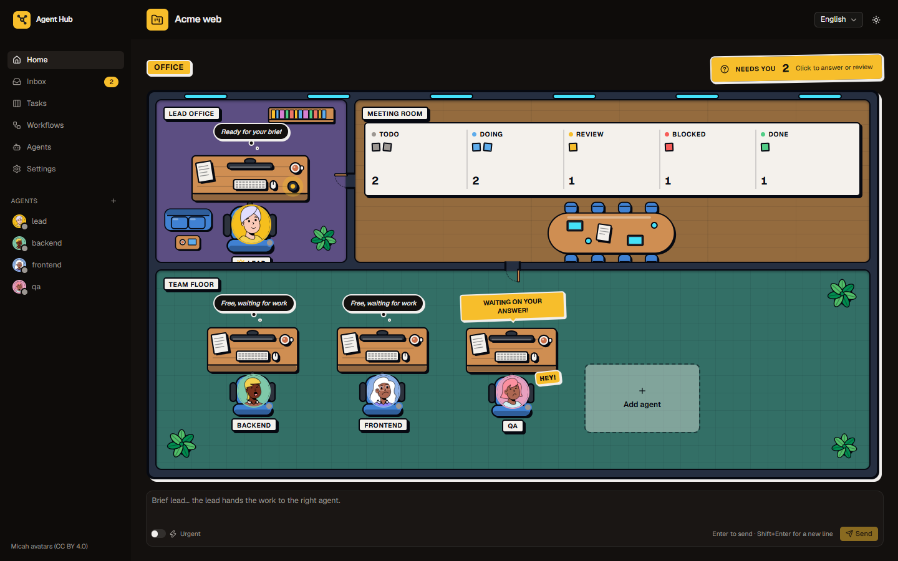
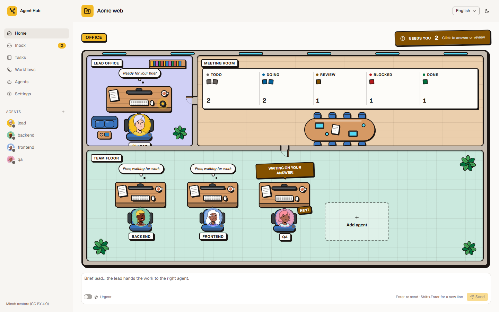
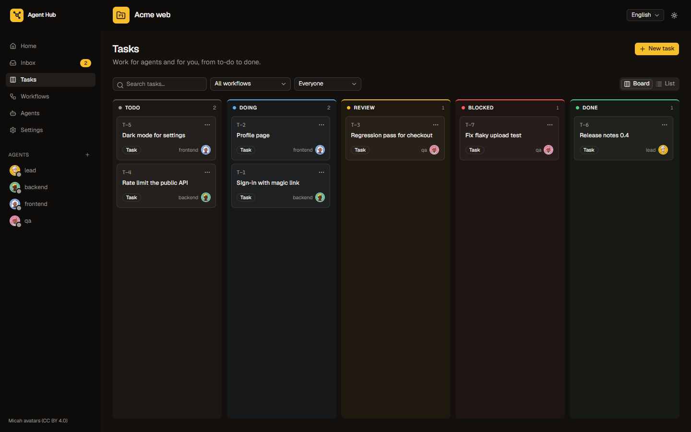
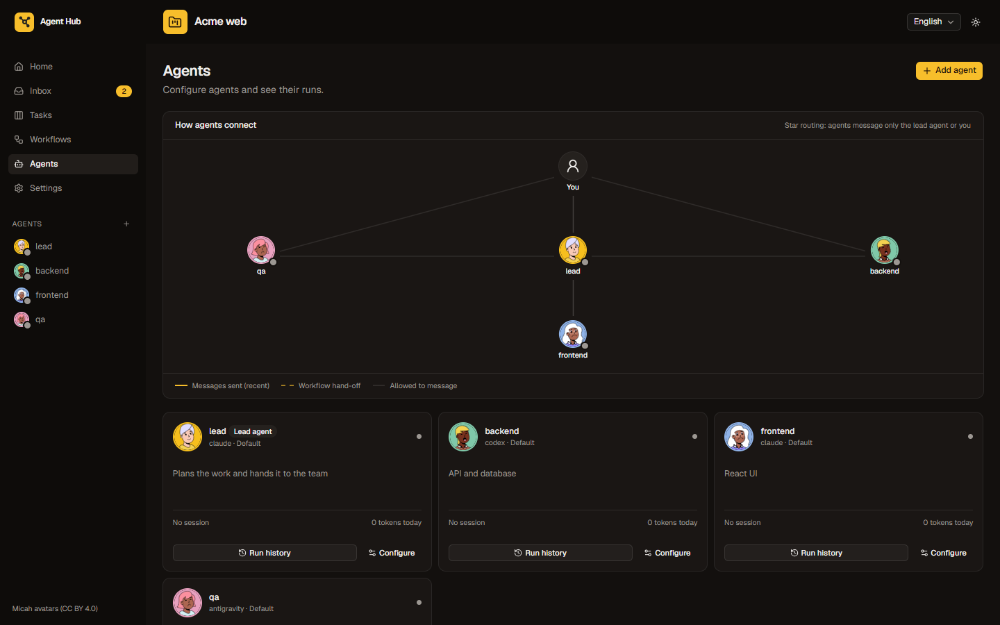

The CLIs you already use
Claude Code, Codex and Antigravity with session resume and per-turn tokens. OpenRouter for text-only agents, or any command that reads stdin.
Agent Hub is a local web UI for Claude Code, Codex, Antigravity or any command. You brief the Lead Agent, it hands parts of the work to the other agents, and you step in when one of them asks you something.
npx @minhbc/agent-hub
Needs Node.js 24+ and one agent CLI that is already signed in.


The hub reuses the sign-in your CLIs already have, so there are no API keys to paste.
Run the npx command and open http://127.0.0.1:4310. Data stays in a SQLite file on your disk.
Create a workspace for a project, then the Lead Agent. Add more agents with a role and an engine each.
It splits the goal into tasks and hands them out. Results that need a decision wait in "Needs you".
Each message runs the CLI for one headless turn and resumes its session. Agents reach each other by writing JSON files to their outbox, so plain replies never bounce between agents.
Claude Code, Codex and Antigravity with session resume and per-turn tokens. OpenRouter for text-only agents, or any command that reads stdin.
The hub reads each CLI's usage limits. When an engine runs out, work waits for the reset or moves to a fallback engine you pick.
Before a session grows too long or its cache expires, the agent writes a short note. The next session starts from that note instead of the whole history.
By default each agent works on its own copy of the repo, so two agents never edit the same file at once.
After a set number of agent-to-agent messages with no human in between, the chain stops and waits for you to retry.
A board from TODO to DONE, and workflows with review steps, "send back" to an earlier step, and cron schedules.
English and Vietnamese UI, light and dark themes.


The hub starts commands on your computer, so the defaults are strict.
npx @minhbc/agent-hub
MIT licensed. Tested on Windows 11; macOS and Linux reports are welcome.